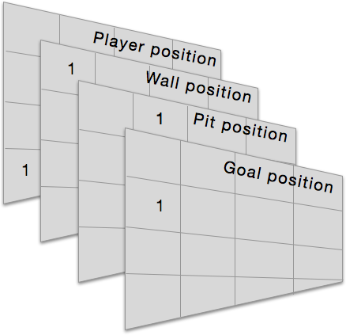

Q-learning with Neural Networks
Learning Gridworld with Q-learning¶
Introduction¶
We've finally made it. We've made it to what we've all been waiting for, Q-learning with neural networks. Since I'm sure a lot of people didn't follow parts 1 and 2 because they were kind of boring, I will attempt to make this post relatively (but not completely) self-contained. In this post, we will dive into using Q-learning to train an agent (player) how to play Gridworld. Gridworld is a simple text based game in which there is a 4x4 grid of tiles and 4 objects placed therein: a player, pit, goal, and a wall. The player can move up/down/left/right ($a \in A \{up,down,left,right\}$) and the point of the game is to get to the goal where the player will receive a numerical reward. Unfortunately, we have to avoid a pit, because if we land on the pit we are penalized with a negative 'reward'. As if our task wasn't difficult enough, there's also a wall that can block the player's path (but it offers no reward or penalty).

Quick Review of Terms and Concepts (skip if you followed parts 1 & 2)¶
A state is all the information necessary (e.g. pixel data in a game) to make a decision that you expect will take you to a new (higher value) state. The high level function of reinforcement learning is to learn the values of states or state-action pairs (the value of taking action $a$ given we're in state $s$). The value is some notion of how "good" that state or action is. Generally this is a function of rewards received now or in the future as a result of taking some action or being in some state.
A policy, denoted $\pi$, is the specific strategy we take in order to get into high value states or take high value actions to maximize our rewards over time. For example, a policy in blackjack might be to always hit until we have 19. We denote a function, $\pi(s)$ that accepts a state $s$ and returns the action to be taken. Generally $\pi(s)$ as a function just evaluates the value of all possible actions given the state $s$ and returns the highest value action. This will result in a specific policy $\pi$ that may change over time as we improve our value estimates.
We call the function that accepts a state $s$ and returns the value of that state $v_{\pi}(s)$. This is the value function. Similarly, there is an action-value function $Q(s, a)$ that accepts a state $s$ and an action $a$ and returns the value of taking that action given that state. Some RL algorithms or implementations will use one or the other. Importantly, if we base our algorithm on learning state-values (as opposed to action-values), we must keep in mind that the value of a state depends completely on our policy $\pi$. Using blackjack as an example, if we're in the state of having a card total of 20, and have two possible actions, hit or stay, the value of this state is only high if our policy says to stay when we have 20. If our policy said to hit when we have 20, we would probably bust and lose the game, thus the value of that state would be low. More formally, the value of a state is equivalent to the value of the highest action taken in that state.
What is Q-learning?¶
Q-learning, like virtually all RL methods, is one type of algorithm used to calculate state-action values. It falls under the class of temporal difference (TD) algorithms, which suggests that time differences between actions taken and rewards received are involved.
In part 2 where we used a Monte Carlo method to learn to play blackjack, we had to wait until the end of a game (episode) to update our state-action values. With TD algorithms, we make updates after every action taken. In most cases, that makes more sense. We make a prediction (based on previous experience), take an action based on that prediction, receive a reward and then update our prediction.
(Btw: Don't confuse the "Q" in Q-learning with the $Q$ function we've discussed in the previous parts. The $Q$ function is always the name of the function that accepts states and actions and spits out the value of that state-action pair. RL methods involve a $Q$ function but aren't necessarily Q-learning algorithms.)
Here's the tabular Q-learning update rule: $$Q(S_t, A_t) \leftarrow Q(S_t, A_t) + \alpha[R_{t+1} + \gamma maxQ(S_{t+1}, a_{t+1}) - Q(S_t, A_t)]$$
So, like Monte Carlo, we could have a table that stores the Q-value for every possible state-action pair and iteratively update this table as we play games. Our policy $\pi$ would be based on choosing the action with the highest Q value for that given state.
But we're done with tables. This is 2015, we have GPUs and stuff. Well, as I alluded to in part 2, our $Q(s,a)$ function doesn't have to just be a lookup table. In fact, in most interesting problems, our state-action space is much too large to store in a table. Imagine a very simplified game of Pacman. If we implement it as a graphics-based game, the state would be the raw pixel data. In a tabular method, if the pixel data changes by just a single pixel, we have to store that as a completely separate entry in the table. Obviously that's silly and wasteful. What we need is some way to generalize and pattern match between states. We need our algorithm to say "the value of these kind of states is X" rather than "the value of this exact, super specific state is X."
That's where neural networks come in. Or any other type of function approximator, even a simple linear model. We can use a neural network, instead of a lookup table, as our $Q(s,a)$ function. Just like before, it will accept a state and an action and spit out the value of that state-action.
Importantly, however, unlike a lookup table, a neural network also has a bunch of parameters associated with it. These are the weights. So our $Q$ function actually looks like this: $Q(s, a, \theta)$ where $\theta$ is a vector of parameters. And instead of iteratively updating values in a table, we will iteratively update the $\theta$ parameters of our neural network so that it learns to provide us with better estimates of state-action values.
Of course we can use gradient descent (backpropagation) to train our $Q$ neural network just like any other neural network.
But what's our target y vector (expected output vector)? Since the net is not a table, we don't use the formula shown above, our target is simply: $r_{t+1} + \gamma * maxQ(s', a')$ for the state-action that just happened. $\gamma$ is a parameter $0\rightarrow1$ that is called the discount factor. Basically it determines how much each future reward is taken into consideration for updating our Q-value. If $\gamma$ is close to 0, we heavily discount future rewards and thus mostly care about immediate rewards. $s'$ refers to the new state after having taken action $a$ and $a'$ refers to the next actions possible in this new state. So $maxQ(s', a')$ means we calculate all the Q-values for each state-action pair in the new state, and take the maximium value to use in our new value update. (Note I may use $s' \text{ and } a'$ interchangeably with $s_{t+1} \text{ and } a_{t+1}$.)
One important note: our reward update for every state-action pair is $r_{t+1} + \gamma*maxQ(s_{t+1}, a)$ except when the state $s'$ is a terminal state. When we've reached a terminal state, the reward update is simply $r_{t+1}$. A terminal state is the last state in an episode. In our case, there are 2 terminal states: the state where the player fell into the pit (and receives -10) and the state where the player has reached the goal (and receives +10). Any other state is non-terminal and the game is still in progress.
There are two keywords I need to mention as well: on-policy and off-policy methods. In on-policy methods we iteratively learn about state values at the same time that we improve our policy. In other words, the updates to our state values depend on the policy. In contrast, off-policy methods do not depend on the policy to update the value function. Q-learning is an off-policy method. It's advantageous because with off-policy methods, we can follow one policy while learning about another. For example, with Q-learning, we could always take completely random actions and yet we would still learn about another policy function of taking the best actions in every state. If there's ever a $\pi$ referenced in the value update part of the algorithm then it's an on-policy method.
Gridworld Details¶
Before we get too deep into the neural network Q-learning stuff, let's discuss the Gridworld game implementation that we're using as our toy problem.
We're going to implement 3 variants of the game in order of increasing difficulty. The first version will initialize a grid in exactly the same way each time. That is, every new game starts with the player (P), goal (+), pit (-), and wall (W) in exactly the same positions. Thus the algorithm just needs to learn how to take the player from a known starting position to a known end position without hitting the pit, which gives out negative rewards.
The second implementation is slightly more difficult. The goal, pit and wall will always be initialized in the same positions, but the player will be placed randomly on the grid on each new game. The third implementation is the most difficult to learn, and that's where all elements are randomly placed on the grid each game.
Let's get to coding.
import numpy as np
def randPair(s,e):
return np.random.randint(s,e), np.random.randint(s,e)
#finds an array in the "depth" dimension of the grid
def findLoc(state, obj):
for i in range(0,4):
for j in range(0,4):
if (state[i,j] == obj).all():
return i,j
#Initialize stationary grid, all items are placed deterministically
def initGrid():
state = np.zeros((4,4,4))
#place player
state[0,1] = np.array([0,0,0,1])
#place wall
state[2,2] = np.array([0,0,1,0])
#place pit
state[1,1] = np.array([0,1,0,0])
#place goal
state[3,3] = np.array([1,0,0,0])
return state
#Initialize player in random location, but keep wall, goal and pit stationary
def initGridPlayer():
state = np.zeros((4,4,4))
#place player
state[randPair(0,4)] = np.array([0,0,0,1])
#place wall
state[2,2] = np.array([0,0,1,0])
#place pit
state[1,1] = np.array([0,1,0,0])
#place goal
state[1,2] = np.array([1,0,0,0])
a = findLoc(state, np.array([0,0,0,1])) #find grid position of player (agent)
w = findLoc(state, np.array([0,0,1,0])) #find wall
g = findLoc(state, np.array([1,0,0,0])) #find goal
p = findLoc(state, np.array([0,1,0,0])) #find pit
if (not a or not w or not g or not p):
#print('Invalid grid. Rebuilding..')
return initGridPlayer()
return state
#Initialize grid so that goal, pit, wall, player are all randomly placed
def initGridRand():
state = np.zeros((4,4,4))
#place player
state[randPair(0,4)] = np.array([0,0,0,1])
#place wall
state[randPair(0,4)] = np.array([0,0,1,0])
#place pit
state[randPair(0,4)] = np.array([0,1,0,0])
#place goal
state[randPair(0,4)] = np.array([1,0,0,0])
a = findLoc(state, np.array([0,0,0,1]))
w = findLoc(state, np.array([0,0,1,0]))
g = findLoc(state, np.array([1,0,0,0]))
p = findLoc(state, np.array([0,1,0,0]))
#If any of the "objects" are superimposed, just call the function again to re-place
if (not a or not w or not g or not p):
#print('Invalid grid. Rebuilding..')
return initGridRand()
return state
The state is a 3-dimensional numpy array (4x4x4). You can think of the first two dimensions as the positions on the board; e.g. row 1, column 2 is the position (1,2) [zero indexed] on the board. The 3rd dimension encodes the object/element at that position. Since there are 4 different possible objects, the 3rd dimension of the state contains vectors of length 4. We're using a one-hot encoding for the elements except that the empty position is just a vector of all zeros. So with a 4 length vector we're encoding 5 possible options at each grid position: empty, player, goal, pit, or wall.
You can also think of the 3rd dimension as being divided into 4 separate grid planes, where each plane represents the position of each element. So below is an example where the player is at grid position (3,0), the wall is at (0,0), the pit is at (0,1) and the goal is at (1,0). [All other elements are 0s]

In our simple implementation it's possible for the board to be initialized such that some of the objects contain a 1 at the same "x,y" position (but different "z" positions), which indicates they're at the same position on the grid. Obviously we don't want to initialize the board in this way, so for the last 2 variants of the game that involve some element of random initialization, we check if we can find "clean" arrays (only one "1" in the 'Z' dimension of a particular grid position) of the various element types on the grid and if not, we just recursively call the initialize grid function until we get a state where elements are not superimposed.
When the player successfully plays the game and lands on the goal, the player and goal positions will be superimposed and that is how we know the player has won (likewise if the player hits the pit and loses). The wall is supposed to block the movement of the player so we prevent the player from taking an action that would place them at the same position as the wall. Additionally, the grid is "enclosed" so that player cannot walk through the edges of the grid.
Now we will implement the movement function.
def makeMove(state, action):
#need to locate player in grid
#need to determine what object (if any) is in the new grid spot the player is moving to
player_loc = findLoc(state, np.array([0,0,0,1]))
wall = findLoc(state, np.array([0,0,1,0]))
goal = findLoc(state, np.array([1,0,0,0]))
pit = findLoc(state, np.array([0,1,0,0]))
state = np.zeros((4,4,4))
#up (row - 1)
if action==0:
new_loc = (player_loc[0] - 1, player_loc[1])
if (new_loc != wall):
if ((np.array(new_loc) <= (3,3)).all() and (np.array(new_loc) >= (0,0)).all()):
state[new_loc][3] = 1
#down (row + 1)
elif action==1:
new_loc = (player_loc[0] + 1, player_loc[1])
if (new_loc != wall):
if ((np.array(new_loc) <= (3,3)).all() and (np.array(new_loc) >= (0,0)).all()):
state[new_loc][3] = 1
#left (column - 1)
elif action==2:
new_loc = (player_loc[0], player_loc[1] - 1)
if (new_loc != wall):
if ((np.array(new_loc) <= (3,3)).all() and (np.array(new_loc) >= (0,0)).all()):
state[new_loc][3] = 1
#right (column + 1)
elif action==3:
new_loc = (player_loc[0], player_loc[1] + 1)
if (new_loc != wall):
if ((np.array(new_loc) <= (3,3)).all() and (np.array(new_loc) >= (0,0)).all()):
state[new_loc][3] = 1
new_player_loc = findLoc(state, np.array([0,0,0,1]))
if (not new_player_loc):
state[player_loc] = np.array([0,0,0,1])
#re-place pit
state[pit][1] = 1
#re-place wall
state[wall][2] = 1
#re-place goal
state[goal][0] = 1
return state
The first thing we do is try to find the positions of each element on the grid (state). Then it's just a few simple if-conditions. We need to make sure the player isn't trying to step on the wall and make sure that the player isn't stepping outside the bounds of the grid.
Now we implement getLoc which is similar to findLoc but can identify superimposed elements, whereas findLoc would miss it (intentionally) if there was superimposition. Additionally, we'll implement our reward function, which will award +10 if the player steps onto the goal, -10 if the player steps into the pit, and -1 for any other move. These rewards are pretty arbitrary, as long as the goal has a significantly higher reward than the pit, the algorithm should do fine.
Lastly, I've implemented a function that will display our grid as a text array so we can see what's going on.
def getLoc(state, level):
for i in range(0,4):
for j in range(0,4):
if (state[i,j][level] == 1):
return i,j
def getReward(state):
player_loc = getLoc(state, 3)
pit = getLoc(state, 1)
goal = getLoc(state, 0)
if (player_loc == pit):
return -10
elif (player_loc == goal):
return 10
else:
return -1
def dispGrid(state):
grid = np.zeros((4,4), dtype=')
player_loc = findLoc(state, np.array([0,0,0,1]))
wall = findLoc(state, np.array([0,0,1,0]))
goal = findLoc(state, np.array([1,0,0,0]))
pit = findLoc(state, np.array([0,1,0,0]))
for i in range(0,4):
for j in range(0,4):
grid[i,j] = ' '
if player_loc:
grid[player_loc] = 'P' #player
if wall:
grid[wall] = 'W' #wall
if goal:
grid[goal] = '+' #goal
if pit:
grid[pit] = '-' #pit
return grid
And that's it. That's the entire gridworld game implementation. Not too bad right? As with my part 2 blackjack implementation, this game is not using OOP-style and implemented in a functional style where we just pass around states.
Let's demonstrate some gameplay. I'll be using the initGridRand() variant so that all items are placed randomly.
state = initGridRand()
dispGrid(state)
As you can see, I clearly need to move 3 spaces down, and 1 space to the right to land on the goal. Remember, our action encoding is: 0 = up, 1 = down, 2 = left, 3 = right.
state = makeMove(state, 1)
state = makeMove(state, 1)
state = makeMove(state, 1)
state = makeMove(state, 3)
print('Reward: %s' % (getReward(state),))
dispGrid(state)
We haven't implemented a display for when the player is on the goal or pit so the player and goal just disappear when that happens.
Neural Network as our Q function¶
Now for the fun part. Let's build our neural network that will serve as our $Q$ function. Since this is a post about Q-learning, I'm not going to code a neural network from scratch. I'm going to use the fairly popular Theano-based library Keras. You can of course use whatever library you want, or roll your own.
Important Note: Up until now, I've been talking about how the neural network can serve the role of $Q(s, a)$, and that's absolutely true. However, I will be implementing our neural network in the same way that Google DeepMind did for its Atari playing algorithm. Instead of a neural network architecture that accepts a state and an action as inputs and outputs the value of that single state-action pair, DeepMind built a network that just accepts a state and outputs separate Q-values for each possible action in its output layer. This is pretty clever because in Q-learning we need to get the $maxQ(s', a')$ [max of the Q values for every possible action in the new state s']. Rather than having to run our network forward for every action, we just need to run it forward once. The result is the same, however, it's just more efficient.

from keras.models import Sequential
from keras.layers.core import Dense, Dropout, Activation
from keras.optimizers import RMSprop
model = Sequential()
model.add(Dense(164, init='lecun_uniform', input_shape=(64,)))
model.add(Activation('relu'))
#model.add(Dropout(0.2)) I'm not using dropout, but maybe you wanna give it a try?
model.add(Dense(150, init='lecun_uniform'))
model.add(Activation('relu'))
#model.add(Dropout(0.2))
model.add(Dense(4, init='lecun_uniform'))
model.add(Activation('linear')) #linear output so we can have range of real-valued outputs
rms = RMSprop()
model.compile(loss='mse', optimizer=rms)
model.predict(state.reshape(1,64), batch_size=1)
#just to show an example output; read outputs left to right: up/down/left/right
So that's the network I've designed. An input layer of 64 units (because our state has a total of 64 elements, remember its a 4x4x4 numpy array), 2 hidden layers of 164 and 150 units, and an output layer of 4, one for each of our possible actions (up, down, left, right) [in that order].
Why did I make the network like this? Honestly, I have no good answer for that. I just messed around with different hidden layer architectures and this one seemed to work fairly well. Feel free to change it up. There's probably a better configuration. (If you discover or know of a much better network architecture for this, let me know).
Online Training¶
Below is the implementation for the main loop of the algorithm. In broad strokes:
- Setup a for-loop to number of epochs
- In the loop, setup while loop (while game is in progress)
- Run Q network forward.
- We're using an epsilon greedy implementation, so at time t with probability $\epsilon$ we will choose a random action. With probability $1-\epsilon$ we will choose the action associated with the highest Q value from our neural network.
- Take action $a$ as determined in (4), observe new state $s'$ and reward $r_{t+1}$
- Run the network forward using $s'$. Store the highest Q value (
maxQ). - Our target value to train the network is
reward + (gamma * maxQ)wheregammais a parameter ($0 <= \gamma <= 1$). - Given that we have 4 outputs and we only want to update/train the output associated with the action we just took, our target output vector is the same as the output vector from the first run, except we change the one output associated with our action to:
reward + (gamma * maxQ) - Train the model on this 1 sample. Repeat process 2-9
Just to be clear, when we first run our neural network and get an output of action-values like this
array([[-0.02812552, -0.04649779, -0.08819015, -0.00723661]])
our target vector for one iteration may look like this:
array([[-0.02812552, -0.04649779, 10, -0.00723661]])
Also note, I initialize epsilon (for the $\epsilon$-greedy action selection) to be 1. It decrements by a small amount on every iteration and will eventually reach 0.1 where it stays. Google DeepMind also used an $\epsilon$-greedy action selection and also initialized epsilon to be 1 and decremented during the game play. if taking action 2 one step (left) resulted in reaching the goal. So we just keep all other outputs the same as before and just change the one for the action we took.
Okay, so let's go ahead and train our algorithm to learn the easiest variant of the game, where all elements are placed deterministically at the same positions every time.
from IPython.display import clear_output
import random
epochs = 1000
gamma = 0.9 #since it may take several moves to goal, making gamma high
epsilon = 1
for i in range(epochs):
state = initGrid()
status = 1
#while game still in progress
while(status == 1):
#We are in state S
#Let's run our Q function on S to get Q values for all possible actions
qval = model.predict(state.reshape(1,64), batch_size=1)
if (random.random() < epsilon): #choose random action
action = np.random.randint(0,4)
else: #choose best action from Q(s,a) values
action = (np.argmax(qval))
#Take action, observe new state S'
new_state = makeMove(state, action)
#Observe reward
reward = getReward(new_state)
#Get max_Q(S',a)
newQ = model.predict(new_state.reshape(1,64), batch_size=1)
maxQ = np.max(newQ)
y = np.zeros((1,4))
y[:] = qval[:]
if reward == -1: #non-terminal state
update = (reward + (gamma * maxQ))
else: #terminal state
update = reward
y[0][action] = update #target output
print("Game #: %s" % (i,))
model.fit(state.reshape(1,64), y, batch_size=1, nb_epoch=1, verbose=1)
state = new_state
if reward != -1:
status = 0
clear_output(wait=True)
if epsilon > 0.1:
epsilon -= (1/epochs)
Alright, so I've empirically tested this and it trains on the easy variant with just 1000 epochs (keep in mind every epoch is a full game played to completion). Below I've implemented a function we can use to test our trained algorithm to see if it has properly learned how to play the game. It basically just uses the neural network model to calculate action-values for the current state and selects the action with the highest Q-value. It just repeats this forever until the game is won or lost. I've made it break out of this loop if it is making more than 10 moves because this probably means it hasn't learned how to win and we don't want an infinite loop running.
def testAlgo(init=0):
i = 0
if init==0:
state = initGrid()
elif init==1:
state = initGridPlayer()
elif init==2:
state = initGridRand()
print("Initial State:")
print(dispGrid(state))
status = 1
#while game still in progress
while(status == 1):
qval = model.predict(state.reshape(1,64), batch_size=1)
action = (np.argmax(qval)) #take action with highest Q-value
print('Move #: %s; Taking action: %s' % (i, action))
state = makeMove(state, action)
print(dispGrid(state))
reward = getReward(state)
if reward != -1:
status = 0
print("Reward: %s" % (reward,))
i += 1 #If we're taking more than 10 actions, just stop, we probably can't win this game
if (i > 10):
print("Game lost; too many moves.")
break
testAlgo(init=0)
Can we get a round of applause for our gridworld player here? Clearly it knows what its doing; it went straight for the prize!
Playing the the harder variant, catastrophic forgetting, and experience replay¶
We're slowly building up our chops and we want our algorithm to train on the harder variant of the game where every new game the player is randomly placed on the grid. It can't just memorize a sequence of steps to take as before, it needs to be able to take the shortest path to the goal (without stepping into the pit) from wherever it starts on the grid. It needs to develop a slightly more sophisticated representation of its environment.
Unfortunately, there is a problem we may need to deal with as our problem becomes increasingly more difficult. There is a known problem called catastrophic forgetting that is associated with gradient descent based training methods in online training.
Imagine that in game #1 that our algorithm is training on (learning Q-values for) the player is placed in between the pit and the goal such that the goal is on the right and the pit is on the left. Using epsilon-greedy strategy, the player takes a random move and by chance takes a step to the right and hits the goal. Great, the algorithm will try to learn that this state-action pair is associated with a high reward by updating its weights in such a way that the output will more closely match the target value (i.e backpropagation). Now, the second game gets initialized and the player is again in between the goal and pit but this time the goal is on the left and the pit is on the right. Perhaps to our naive algorithm, the state seems very similar to the last game. Let's say that again, the player chooses to make one step to the right, but this time it ends up in the pit and gets -10 reward. The player is thinking "what the hell I thought going to the right was the best decision based on my previous experience." So now it may do backpropagation again to update its state-action value but because this state-action is very similar to the last learned state-action it may mess up its previously learned weights.
This is the essence of catastrophic forgetting. There's a push-pull between very similar state-actions (but with divergent targets) that results in this inability to properly learn anything. We generally don't have this problem in the supervised learning realm because we do randomized batch learning, where we don't update our weights until we've iterated through some random subset of our training data.
Catastrophic forgetting is probably not something we have to worry about with the first variant of our game because the targets are always stationary; but with the harder variants, it's something we should consider, and that is why I'm implementing something called experience replay. Experience replay basically gives us minibatch updating in an online learning scheme. It's actually not a huge deal to implement; here's how it works.
Experience replay:
- In state $s$, take action $a$, observe new state $s_{t+1}$ and reward $r_{t+1}$
- Store this as a tuple $(s, a, s_{t+1}, r_{t+1})$ in a list.
- Continue to store each experience in this list until we have filled the list to a specific length (up to you to define)
- Once the experience replay memory is filled, randomly select a subset (e.g. 40)
- Iterate through this subset and calculate value updates for each; store these in a target array (e.g.
y_train) and store the state $s$ of each memory inX_train - Use
X_trainandy_trainas a minibatch for batch training. For subsequent epochs where the array is full, just overwrite old values in our experience replay memory array.
Thus, in addition to learning the action-value for the action we just took, we're also going to use a random sample of our past experiences to train on to prevent catastrophic forgetting.
So here's the same training algorithm from above except with experience replay added. Remember, this time we're training it on the harder variant of the game where the player is randomly placed on the grid.
model.compile(loss='mse', optimizer=rms)#reset weights of neural network
epochs = 3000
gamma = 0.975
epsilon = 1
batchSize = 40
buffer = 80
replay = []
#stores tuples of (S, A, R, S')
h = 0
for i in range(epochs):
state = initGridPlayer() #using the harder state initialization function
status = 1
#while game still in progress
while(status == 1):
#We are in state S
#Let's run our Q function on S to get Q values for all possible actions
qval = model.predict(state.reshape(1,64), batch_size=1)
if (random.random() < epsilon): #choose random action
action = np.random.randint(0,4)
else: #choose best action from Q(s,a) values
action = (np.argmax(qval))
#Take action, observe new state S'
new_state = makeMove(state, action)
#Observe reward
reward = getReward(new_state)
#Experience replay storage
if (len(replay) < buffer): #if buffer not filled, add to it
replay.append((state, action, reward, new_state))
else: #if buffer full, overwrite old values
if (h < (buffer-1)):
h += 1
else:
h = 0
replay[h] = (state, action, reward, new_state)
#randomly sample our experience replay memory
minibatch = random.sample(replay, batchSize)
X_train = []
y_train = []
for memory in minibatch:
#Get max_Q(S',a)
old_state, action, reward, new_state = memory
old_qval = model.predict(old_state.reshape(1,64), batch_size=1)
newQ = model.predict(new_state.reshape(1,64), batch_size=1)
maxQ = np.max(newQ)
y = np.zeros((1,4))
y[:] = old_qval[:]
if reward == -1: #non-terminal state
update = (reward + (gamma * maxQ))
else: #terminal state
update = reward
y[0][action] = update
X_train.append(old_state.reshape(64,))
y_train.append(y.reshape(4,))
X_train = np.array(X_train)
y_train = np.array(y_train)
print("Game #: %s" % (i,))
model.fit(X_train, y_train, batch_size=batchSize, nb_epoch=1, verbose=1)
state = new_state
if reward != -1: #if reached terminal state, update game status
status = 0
clear_output(wait=True)
if epsilon > 0.1: #decrement epsilon over time
epsilon -= (1/epochs)
I've increased the training epochs to 3000 just based on empiric testing. So let's see how it does, we'll run our testAlgo() function a couple times to see how it handles randomly initialized player scenarios.
testAlgo(1) #run testAlgo using random player placement => initGridPlayer()
Fantastic. Let's run the testAlgo() one more time just to prove it has generalized.
testAlgo(init=1) #Of course, I ran it many times more than I'm showing here
I'll be darned. It seems to have learned to play the game from any starting position! Pretty neat.
The Hardest Variant¶
Okay, I lied. I will not be showing you the algorithm learning the hardest variant of the game (where all 4 elements are randomly placed on the grid each game). I'm leaving that up to you to attempt and let me know how it goes via email (outlacedev@gmail.com). The reason is, I'm doing all this on a Macbook Air (read: no CUDA gpu) and thus I cannot train the algorithm to a sufficiently large number of epochs for it to learn the problem. I suspect it may require significantly more epochs, perhaps more than 50,000. So if you have an nVIDIA GPU and can train it that long, let me know if it works. I could have used Lua/Torch7 since there is an OpenCL version but no one would read this if it wasn't in Python =P.
Conclusion¶
There you have it, basic Q-learning using neural networks.
That was a lot to go through, hopefully I didn't make too many mistakes (as always, email if you spot any so I can post corrections). I'm hoping you have success training Q-learning algorithms on more interesting problems than the gridworld game.
I'd say this is definitely the climax of the series on reinforcement learning. I plan to release a part 4 that will be about other temporal difference learnings algorithms that use eligibility traces. Since that's a relatively minor new concept, I will likely use it on another toy problem like gridworld. However, I do, at some point, want to release a post about setting up and using the Arcade Learning Environment (ALE) [fmr. Atari Learning Environment] and training an alogorithm to play Atari games, however, that will likely be a long while from now so don't hold your breath.
Cheers
Download this IPython Notebook¶
https://github.com/outlace/outlace.github.io/blob/master/ipython-notebooks/rlpart2.ipynb
References¶
- http://www.computervisiontalks.com/deep-learning-lecture-16-reinforcement-learning-and-neuro-dynamic-programming-nando-de-freitas/
- https://www.youtube.com/watch?v=yNeSFbE1jdY
- http://www.researchgate.net/profile/Marco_Wiering/publication/236645821_Reinforcement_Learning_to_Train_Ms._Pac-Man_Using_Higher-order_Action-relative_Inputs/links/0deec518a22042f5d7000000.pdf?inViewer=true&pdfJsDownload;=true&disableCoverPage;=true&origin;=publication_detail
- "Reinforcement Learning An Introduction" Sutton & Barto, 1996
- "Human-level control through deep reinforcement learning" Mnih et al, 2015 (Google DeepMind Atari paper)